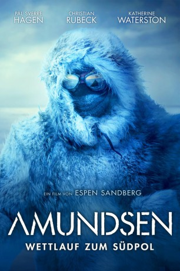

#12138 Amundsen
 
 IMDB-Wertung: 6.3 / 10
IMDB-Wertung: 6.3 / 10  Metascore: 0
Metascore: 0 
Nachdem er durch einen Zeitungsartikel erfahren hat, dass sein Bruder Roald Amundsen in der Arktis verschollen ist, eilt Leon Amundsen zu dessen Haus, um dort auf weitere Nachrichten zu warten. Dort trifft er allerdings auf Roalds deutlich jüngere Geliebte Bess Brigads. Während sie gemeinsam warten, erzählt Leon ihr von Roalds Kindheit, und wie er sich schon früh für Nord- und Südpol interessierte. Wie die beiden Brüder nach dem Tod ihrer Eltern eine immer engere Beziehung zueinander aufbauten und den Plan schmiedeten, die ersten Menschen zu sein, die jemals den Nordpol erreichen. Und wie sie es schließlich schaffen, eine Expedition auf die Beine zu stellen, die jedoch erstmal davon durchkreuzt wird, dass Frederick Cook 1908 behauptet, am Nordpol gewesen zu sein..
Jahr: 2019
Dauer: 125 Minuten
FSK: 12
Land: Norwegen Studio: Ascot Elite Entertainment GroupTonspuren: DTS - ,
Untertitel: Deutsch,
Auflösung: 1080p (1920x804) Größe: 11980 MB
Genre: Drama, Geschichte, Biographie
Regisseur: Espen Sandberg
Drehbuch: Ravn Lanesskog
Soundtrack: Johan Söderqvist
Darsteller:
 Pål Sverre Hagen als Roald Amundsen
Pål Sverre Hagen als Roald Amundsen Christian Rubeck als Leon Amundsen
Christian Rubeck als Leon Amundsen Katherine Waterston als Bess Magids
Katherine Waterston als Bess Magids Trond Espen Seim als Fridtjof Nansen
Trond Espen Seim als Fridtjof Nansen- Ida Ursin-Holm als Kiss Bennett
 Mads Sjøgård Pettersen als Helmer Hanssen
Mads Sjøgård Pettersen als Helmer Hanssen Fridtjov Såheim als Hjalmar Johansen
Fridtjov Såheim als Hjalmar Johansen- Kenneth Åkerland Berg als Sverre Hassel
- Elg Elgesem als Olav Bjaaland
- Jonas Strand Gravli als Leif Dietrichson
- Ole Christoffer Ertvaag als Hjalmar Riiser-Larsen
- Ted Otis als Lincoln Ellsworth
- Preben Hodneland als Fredrik Ramm
- Sondre Larsen als Gennady Olonkin
- Vojtech Kotek als Karl Feucht
- Øystein Røger als Jens Amundsen
 Luca Calvani als Umberto Nobile
Luca Calvani als Umberto Nobile- Premysl Bures als Robert Peary
- Geoffrey Kirkness als Charles Bennett
- Jamie Marshall als Engelsk Mann
- Glenn Andre Kaada als Oscar Wisting
- Ruby Dagnall als Aline Amundsen
- Herbert Nordrum als Kristian Presterud
- Eirik Evjen als Paul Knudsen
- Marius Lien als Oskar Omdal
- Endre Hellestveit als Peter Tessem
- Torgny Gerhard Aanderaa als Harald Sverdrup
- Louise Kristine Høegh-Olsen als Kakonita
- Maya Valgreen als Kamilla
- Konrad Nuka Godtfredsen als Kakot
- Petronella Barker als Gustava Sahlquist
- Johannes Blumenthal als Unge Roald
- Kristoffer Weibye-Grønn als Unge Leon
- David Bark-Jones als Robert Falcon Scott
- Adrian Lukis als Lord Curzon
- Jirí Mach als Kong Haakon VII
- Eva Alner Jizdna als Dronning Maud
- Phoebe Farnham als Mary Steel
- Bjørn Skagestad als Frøis Frøisland
- Adéla Anna Nováková als Rosalie (3)
- Tereza Hladíková als Rosalie (14)
- Alzbeta Holecková als Gustava (7)
- Karolina Pouchová als Gustava (18)
- Peder Sixten Sandberg als Nikolay (8)
- Stepán Matejcek als Nikolay (19)
- Anders Køhn Drivdal als Ole Engelstad
- Axel Sejer Sandberg als Avisgutt
- Ea Johanna Sandberg als Liv Nansen
- André Santagati als Military
Datei: X:\2019(A-F)\Amundsen (2019, FSK12, 1920x804).mkv seit 24.12.2019
Festplatte: HD 2018(G-Z)-2019(A-Z)
 Es gibt insgesamt 60 Filme in der Gruppe '2019(A-F)'
Es gibt insgesamt 60 Filme in der Gruppe '2019(A-F)'